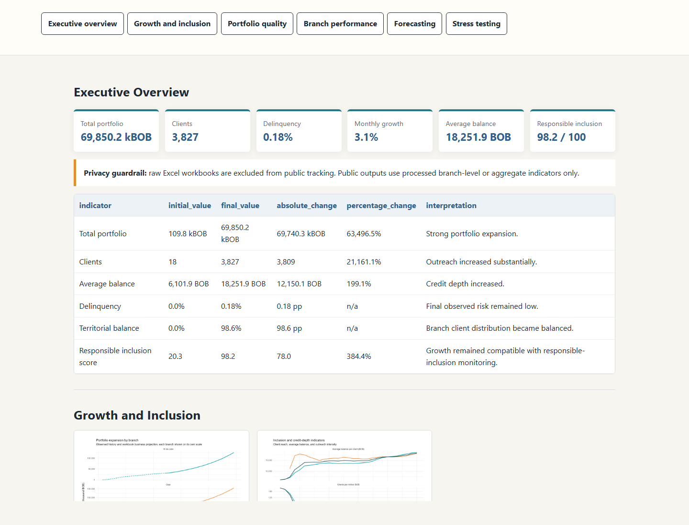
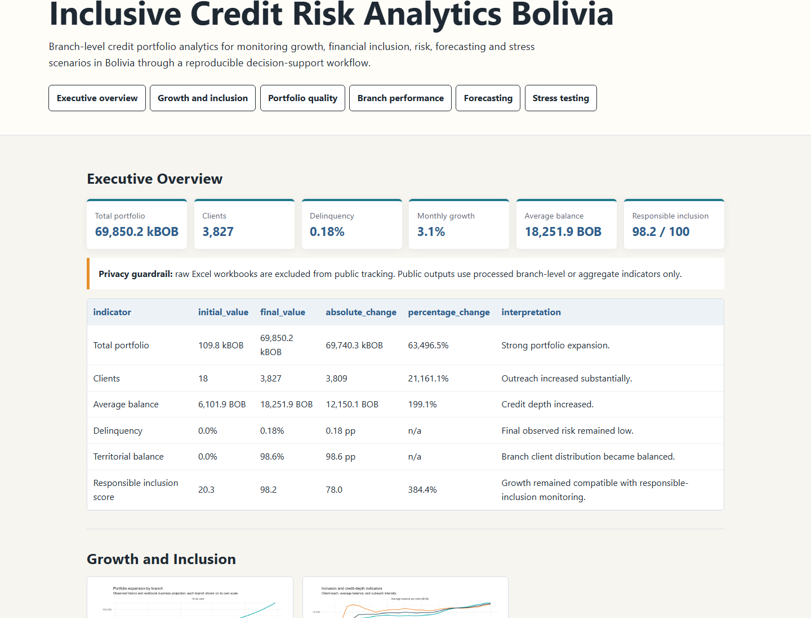
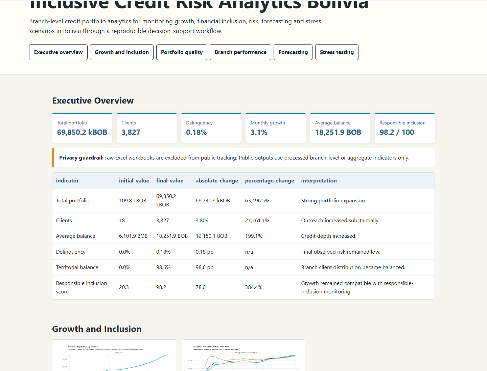
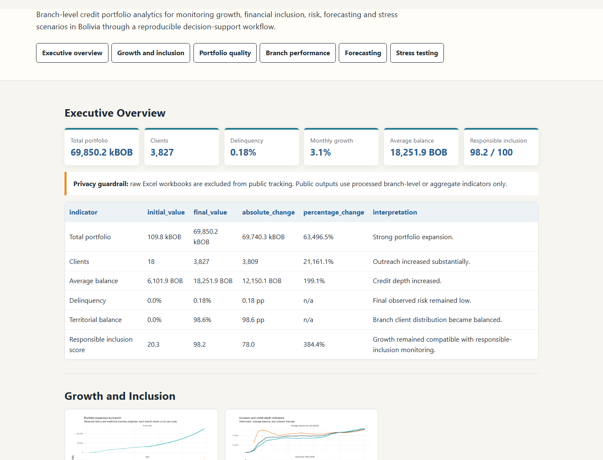
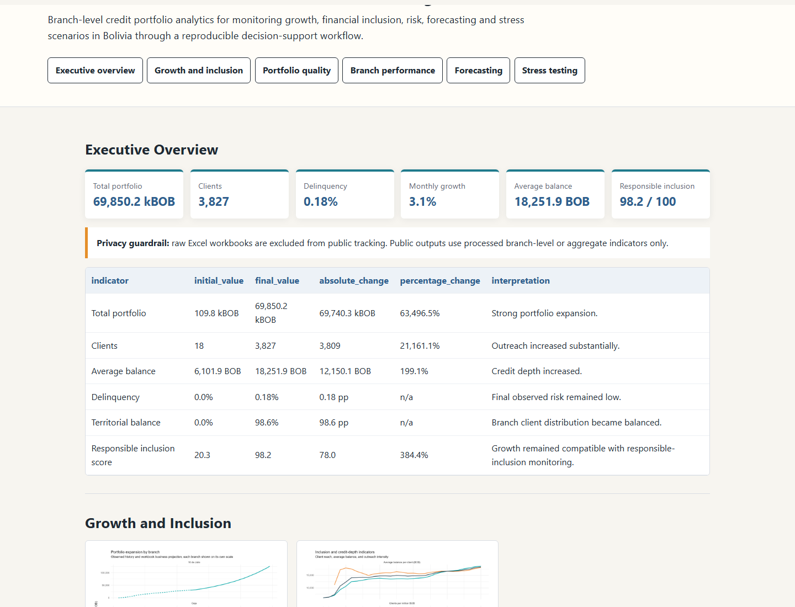
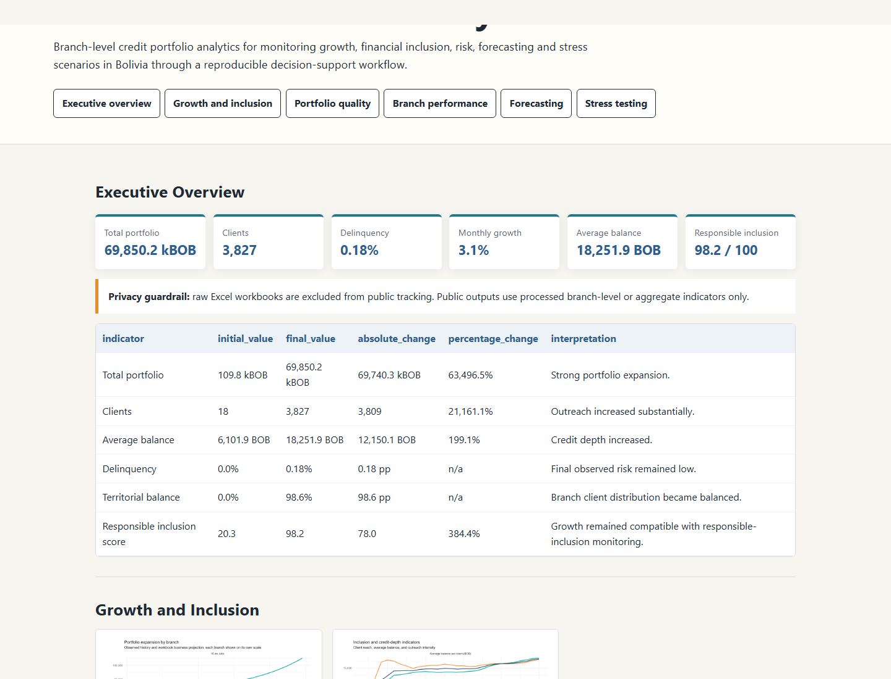

- The global active portfolio increased from 109.8 kBOB to 69,850.2 kBOB during the observed period.
- Client outreach expanded from 18 to 3,827 clients while branch coverage became more territorially balanced.
- Final observed delinquency remained below 1%, preserving the responsible-growth interpretation.
- Branch comparison shows Ceja with 55.3% of final portfolio and 2,142 clients, while 16 de Julio holds 44.7% and 1,685 clients.
- ARIMA is the best global forecasting model by holdout RMSE among the existing model outputs.
- Stress scenarios show the monitoring value of combining portfolio growth, delinquency and inclusion signals.
Responsible finance and development analytics
Inclusive Credit Risk Analytics Bolivia
Responsible credit-portfolio analytics for monitoring growth, financial inclusion, branch performance, risk, forecasting and stress scenarios in Bolivia.
This project transforms operational Excel workbooks into a privacy-aware branch-level monthly panel, executive KPIs, dashboard-ready figures, forecast validation outputs and stress-test scenarios.
Executive Snapshot
Portfolio, inclusion and risk indicators.
2012-03 to 2014-07Observed period
109.8 kBOBInitial active portfolio
69,850.2 kBOBFinal active portfolio
18Initial clients
3,827Final clients
0.25%Maximum observed global mora
98.6%Final territorial client balance
98.2 / 100Final responsible inclusion score
Global ARIMASelected forecast model by holdout RMSE
Key Findings
Decision-oriented findings from existing outputs.
Dashboard
Six public dashboard views.
Executive Overview
Growth and Inclusion
Portfolio Quality
Branch Performance
Forecasting
Stress Testing

Executive Overview
Portfolio, clients, delinquency, average balance and responsible inclusion KPIs.

Growth and Inclusion
Client expansion, portfolio depth and inclusion indicators.

Portfolio Quality
Mora monitoring and growth-risk positioning.

Branch Performance
Branch shares, client balance and portfolio comparison.

Forecasting
Observed portfolio, projection comparison and selected forecasting output.

Stress Testing
Scenario comparison for portfolio effect, delinquency effect and risk monitoring.
Main Figures
Existing dashboard-ready figures.

Portfolio expansion
Interpretation: monitors the scale of active portfolio growth.
Period: 2012-03 to 2014-07. Unit: thousand BOB. Source: processed branch-level portfolio panel. Note: monitoring evidence, not causal welfare effect.

Client growth
Interpretation: tracks outreach expansion and average credit depth.
Period: 2012-03 to 2014-07. Unit: clients and BOB. Source: processed inclusion metrics. Note: client expansion is a financial-inclusion proxy.

Inclusion and credit depth
Interpretation: combines outreach, portfolio depth and risk penalty.
Period: 2012-03 to 2014-07. Unit: 0-100 score. Source: processed inclusion metrics. Note: operational score, not household welfare measurement.

Branch comparison
Interpretation: evaluates client and portfolio distribution across branches.
Period: 2012-03 to 2014-07. Unit: balance score. Source: branch share outputs. Note: branch balance is an access-equity proxy.

Delinquency evolution
Interpretation: monitors portfolio quality through mora behavior.
Period: 2012-03 to 2014-07. Unit: delinquency rate. Source: processed risk panel. Note: risk is monitored at branch and global level.

Growth-risk positioning
Interpretation: places branch performance in a growth and delinquency matrix.
Period: observed branch panel. Unit: growth and delinquency metrics. Source: risk-return matrix. Note: supports monitoring, not lending recommendations.

Forecast versus projection
Interpretation: compares observed series, statistical forecast and workbook projection.
Period: observed panel and forecast horizon. Unit: thousand BOB. Source: existing forecast outputs. Note: forecasts are scenarios, not guarantees.

Stress-test scenarios
Interpretation: compares resilience across existing stress assumptions.
Period: 12-month stress horizon. Unit: thousand BOB and risk flags. Source: existing stress-test output. Note: scenarios evaluate resilience under documented assumptions.
Executive Tables
Four existing tables reused without recalculation.
Executive KPI Summary
| indicator | initial_value | final_value | absolute_change | percentage_change | interpretation |
|---|---|---|---|---|---|
| Total portfolio | 109.8 kBOB | 69,850.2 kBOB | 69,740.3 kBOB | 63,496.5% | Strong portfolio expansion over the observed period. |
| Clients | 18.0 | 3,827.0 | 3,809.0 | 21,161.1% | Outreach increased substantially. |
| Average balance | 6,101.9 BOB | 18,251.9 BOB | 12,150.1 BOB | 199.1% | Credit depth increased alongside client growth. |
| Delinquency | 0.0% | 0.2% | 0.2 pp | n/a | Final observed delinquency remained below 1%. |
| Territorial balance | 0.0% | 98.6% | 98.6 pp | n/a | Client distribution became more balanced between branches. |
| Responsible inclusion score | 20.3 | 98.2 | 78.0 | 384.4% | Growth remained compatible with responsible-inclusion monitoring. |
Branch Performance
| branch | portfolio | clients | average_balance | growth | delinquency_rate | portfolio_share | risk_flag |
|---|---|---|---|---|---|---|---|
| 16 de Julio | 31,241.0 kBOB | 1,685.0 | 18,540.6 BOB | 31.9% | 1.0% | 44.7% | Amber |
| Ceja | 38,609.2 kBOB | 2,142.0 | 18,024.8 BOB | 43.4% | -0.5% | 55.3% | Green |
Forecast Accuracy
| model | mae | rmse | mape | ranking | selected_model |
|---|---|---|---|---|---|
| Global ARIMA | 3,451.7 | 3,759.3 | 5.30% | 1 | Yes |
| Global ETS | 5,463.7 | 5,999.1 | 8.37% | 2 | No |
| Global Naive | 6,717.6 | 7,659.4 | 10.22% | 3 | No |
Stress Test Summary
| scenario | assumption | portfolio_effect | delinquency_effect | risk_level | recommended_action |
|---|---|---|---|---|---|
| Credit tightening | 12-month scenario using existing stress-test assumptions | 78,708.9 kBOB ending portfolio | 0.2% stressed delinquency | Green | Lower access expansion but more conservative risk posture. |
| High growth risk | 12-month scenario using existing stress-test assumptions | 140,552.3 kBOB ending portfolio | 0.3% stressed delinquency | Green | Fast outreach that requires stronger risk governance. |
| Mora shock | 12-month scenario using existing stress-test assumptions | 93,940.7 kBOB ending portfolio | 0.5% stressed delinquency | Green | Stress case to test resilience of responsible finance. |
| Responsible inclusion | 12-month scenario using existing stress-test assumptions | 105,548.4 kBOB ending portfolio | 0.2% stressed delinquency | Green | Balanced outreach with controlled risk. |
Data and Analytical Workflow
From operational workbooks to public decision products.
Workflow
Raw operational Excel workbooks
Privacy and data-quality checks
Branch-level monthly analytical panel
Portfolio and inclusion indicators
Forecasting and stress scenarios
Figures, tables, reports and dashboard
Data scope
- Sources: operational Excel workbooks consolidated by the existing R workflow.
- Period: 2012-03 to 2014-07.
- Unit of analysis: branch-level monthly portfolio and inclusion indicators.
- Main transformations: Excel ingestion, sheet consolidation, panel construction, KPI engineering, forecast validation and stress scenarios.
- Limitations: branch-level operational evidence, limited period and no causal poverty impact estimation.
Data Privacy
Public outputs are aggregated and privacy-aware.
- Raw Excel workbooks are not distributed publicly.
data/raw/is excluded through.gitignore, while documentation placeholders remain visible.- Public products use aggregate or branch-level indicators.
- Names, identifiers and individual-level information are not published.
- Original data require authorization before any redistribution.
Methodology
Existing analytical approach.
Data consolidation
Consolidation of heterogeneous Excel sheets into a tidy branch-level monthly panel.
Portfolio KPIs
Active portfolio, clients, average balance, disbursement intensity, mora and branch shares.
Inclusion indicators
Client outreach, credit depth, concentration and responsible inclusion monitoring.
Branch comparison
Comparison of 16 de Julio and Ceja using final portfolio, client and risk indicators.
Forecast validation
Holdout validation for Naive, ETS and ARIMA models using existing model outputs.
Stress testing
Scenario monitoring for credit tightening, high growth risk, mora shock and responsible inclusion.
Reports
Existing documentation and public outputs.
Project Overview
Public web overview.
Executive Summary
KPIs and decision snapshot.
Research Note
Development and research framing.
Technical Report
Technical documentation.
Methodology
Methodological notes.
Data Dictionary
Variable definitions.
Development Lens
Development interpretation and limits.
Validation Report
Public validation record.
Reproducibility
How the workflow is inspected.
Main command
source('scripts/01_run_analysis.R')This command is documented for authorized environments with the required local raw workbooks. It was not executed during this website update.
Repository structure
data/raw/: private local workbooks, ignored from public Git tracking.docs/: public dashboard, reports and methodology documentation.docs/figures/: dashboard-ready visual outputs.outputs/andreports/: existing analytical products and report sources..github/workflows/: repository workflow checks available.
Limitations
Scope and interpretation safeguards.
- The project uses operational branch-level data and a limited observation period.
- It does not estimate causal poverty reduction, household welfare effects or firm-level productivity impacts.
- Forecasting outputs support monitoring and scenario analysis; they are not guarantees of future portfolio performance.
- Stress testing represents documented scenarios under existing assumptions.
- Financial inclusion indicators are operational proxies, not direct socioeconomic outcomes.
Citation
Cite this project.
Citation metadata are available in CITATION.cff.
Author
Monica Cueto Tapia
Applied Economist & Data Analyst.